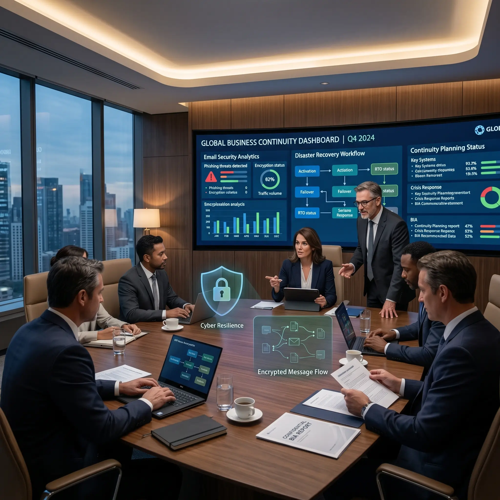
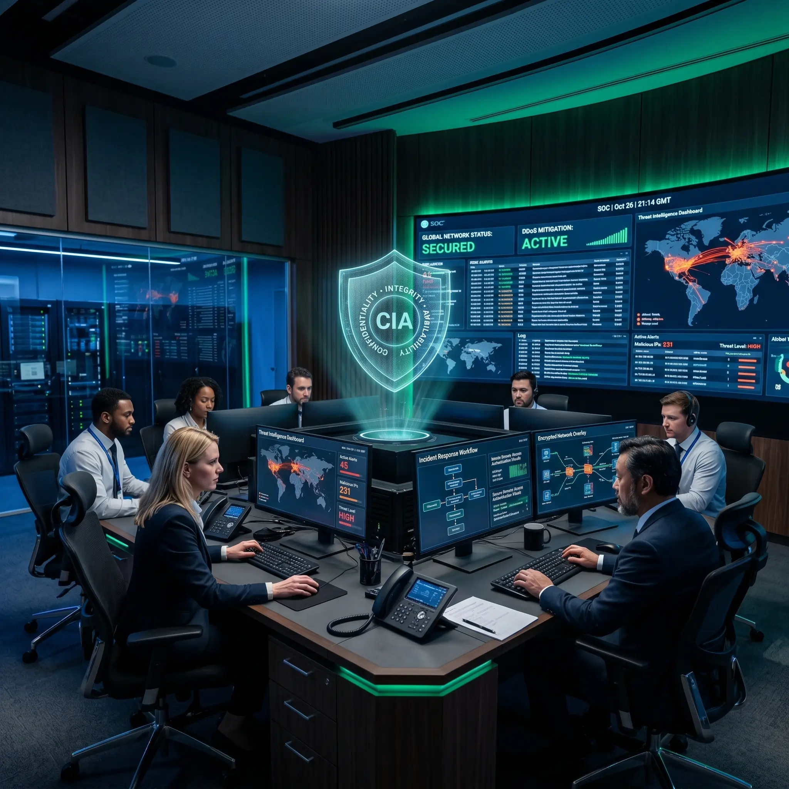

At People Prime Worldwide, we are dedicated to implementing a comprehensive security program that aligns with our high standards of risk management and operational maturity. Our goal is to significantly enhance our ability to manage risks effectively by successfully deploying these new security measures. These measures, designed in collaboration with industry-leading security experts, will encompass a wide range of security controls, including robust access management, advanced threat detection and prevention technologies, and a comprehensive security awareness program for our employees. By implementing these comprehensive security enhancements, we aim to create a highly secure environment that protects our sensitive data, systems, and operations from both internal and external threats.
Leadership and Accountability : We have designated a dedicated Security Program Manager responsible for overseeing all activities related to the security program, from initial implementation to ongoing maintenance. This role ensures a singular point of accountability and leadership, enhancing the efficiency and effectiveness of our security initiatives.
Risk Management : Our security program is designed to drastically improve our risk management capabilities. We conduct regular risk assessments to identify potential threats and vulnerabilities, allowing us to proactively mitigate risks before they can impact our operations.
Compliance and Standards : We adhere to industry standards and regulatory requirements to ensure our security measures are robust and compliant. This includes regular audits and reviews to ensure continuous improvement and alignment with best practices.
Training and Awareness : Employee awareness and training are critical components of our security program. We provide ongoing education and training to ensure all employees understand their roles and responsibilities in maintaining our security posture.
Incident Response : In the case of a security breach, we have a comprehensive plan in place for responding to the incident. This plan outlines the steps to be taken to quickly and effectively respond to and recover from security incidents, minimizing potential impact and ensuring business continuity.
Continuous Improvement : Our security program is not static; it evolves to address emerging threats and changes in the business environment. We continuously review and update our policies and procedures to ensure they remain effective and relevant.

The Acceptable Use Policy (AUP) outlines the acceptable and unacceptable use of People Prime IT resources, ensuring that all users understand their responsibilities and the organization's expectations.
The Access Control Policy (ACP) establishes the framework for granting, managing, and revoking access to People Prime Worldwide's IT resources, ensuring that access is based on business needs and security principles.
The Change Management Policy outlines the procedures for managing changes to People Prime Worldwide's IT systems, minimizing risks, and ensuring that changes are implemented in a controlled manner.
The Information Security Policy establishes the principles and guidelines for protecting People Prime Worldwide's information assets from threats, ensuring confidentiality, integrity, and availability.
The Incident Response Policy outlines the procedures for identifying, managing, and responding to security incidents, ensuring a swift and effective resolution to minimize impact.
The Remote Access Policy establishes the requirements for secure remote access to People Prime Worldwide's IT resources, ensuring that remote access is conducted in a secure and controlled manner.

The Email/Communication Policy outlines the guidelines for the proper use of email and communication tools, ensuring that communications are conducted securely and professionally.
The Business Continuity Plan (BCP) outlines the procedures for maintaining business operations during and after a disruptive event, ensuring the organization's resilience.